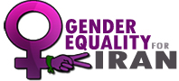

پذيرش > اخبار > آزادی و برابری جنسیتی در ایران : اعلام همبستگی بیش از 40 شبکه بین المللی زنان ، سازمان (...)

 آزادی و برابری جنسیتی در ایران : اعلام همبستگی بیش از 40 شبکه بین المللی زنان ، سازمان ها و گروه ها با مردم ایران آزادی و برابری جنسیتی در ایران : اعلام همبستگی بیش از 40 شبکه بین المللی زنان ، سازمان ها و گروه ها با مردم ایران
20 بهمن 1388 - - نسخه قابل چاپ

برابری جنسیتی - بیش از یک ماه پیش جمعی از فعالان زن ایرانی از همه مدافعان حقوق زنان، سازمان ها و شبکه های زنان دعوت کردند که برای حمایت از جنبش زنان و جنبش حقوق مدنی درایران وارد عمل شوند و در مارس 2010 اقدامات حمایتی و اعتراضی را تحت شعار " آزادی و برابری جنسیتی در ایران" سازمان دهند. از آنها خواستند اگر در ایران سرکوب همه جانبه اعمال می شود آنان در خارج ایران صدای خواهران شان در سراسر دنیا شوند و ازاین طریق همبستگی شان را به نمایش بگذارند. تاکنون بسیاری از شبکه ها و سازمان های زنان و حقوق بشری به این فراخوان پاسخ داده اند وبرخی در ماه مارس برنامه هایی ترتیب خواهند داد.اکنون زنان جهان هستند که همگان را به همبستگی با مردم ایران می خوانند. در زیر متن فراخوان و امصاهای اولیه حدود 40 شبکه و گروه های زنان را می خوانید :
فراخوان برای آزادی و برابری جنسیتی در ایران
برای پایان دادن به خشونت و سرکوب در ایران، آزادی فوری بازداشت شدگان از همه مدافعان حقوق زنان، سازمان ها و شبکه های دفاع از حقوق زن و فمینیست های جهان دعوت می کنیم درهمبستگی با مبارزات حق طلبانه زنان در سراسر دنیا در حمایت از جنبش زنان و جنبش حقوق مدنی درایران وارد عمل شوند و در ماه مارس 2010 در سراسر جهان اقدامات حمایتی و اعتراضی را تحت شعار " آزادی و برابری جنسیتی در ایران" سازمان دهند.
جنبش زنان ایران در سی سال گذشته از پیشگامان و پیشقراولان مبارزه برای آزادی و برابری در ایران بوده است. تبعیضات جنسیتی با دیگر تبعیضات قومیتی، مذهبی، سیاسی، اقتصادی، طبقاتی ارتباطی تنگاتنگ دارد. از این رو، مقاومت غیرخشونت آمیززنان و مردان مدافع برابری جنسیتی - در حوزه های حقوقی، فرهنگی، اقتصادی و... - تاثیر شایانی در رشد و گسترش جنبش دموکراسی خواهی داشته است. زنان ایران سال هاست که به شیوه های گوناگون فردی و جمعی و با برپائی کمپين های گوناگون برای تغییر قوانین نابرابر و ترويج خواست برابری در راه آزادی گام برداشته اند و در این روند تهديد، توهين، بازداشت و زندان را به جان خريده اند و هم اکنون نیز بسیاری از آنان در بند هستند.
پس از گذشت 8 ماه از برگزاری دهمین دوره انتخابات ریاست جمهوری ایران و آغاز جنبش مردمی،گسترش روزافزون مبارزه دموکراسی خواهی مردم ایران با سرکوب بیشتر و خشن تری مواجه شده است. اعمال خشونت های روانی و فیزیکی، بازداشت، شکنجه، تجاوز و صدور و اجرای حکم های سنگین از زندان تا اعدام دایره خشونت علیه فعالان مدنی و سیاسی ایران را افرایش داده است. در حال حاضردهها نفر زن اعم از فعالان جنبش زنان، جنبش سبز، جنبش دانشجویی، جنبش کارگری و فعالان مدنی و سیاسی بازداشت شده و یا حکم های سنگین دریافت کرده اند و هر روز نام های تازه ای ليست محکومان مدنی و سیاسی را طولانی تر می کند. در اين شرايط، همراه با گسترش دستگیری زنان فعال در جنبش سراسری و بویژه فعالان حوزه زنان، طرح تصویب لایحه های قانونی مروج تبعیض جنسيتی همچون لایحه حمایت خانواده سرعت گرفته است. به این ترتیب، در سی امین سال تصویب کنوانسیون رفع کلیه اشکال تبعیض علیه زنان (CEDAW) (که ایران امضا نکرده است)، ما سی امین سال تبعیض علیه زنان را در ايران طی می کنیم. سال هایی که تحت لوای شرع و قانون بر زنان تبعیض روا داشته می شود. در آستانه اجلاس پکن به علاوه 15 (مارس 2010)، یعنی 15 سال پس از برگزاری چهارمین کنفرانس جهانی زنان که نتیجه آن تهیه برنامه عمل برای دولت ها بود، دولت ایران به هیچیک از تعهدات خود برای رفع تبعیض از زنان عمل نکرده است.
در این شرایط حساس، گسترش همبستگی جهانی همه زنان آزادی خواه و برابری طلب جهان با خواهران ايرانيشان و دیگر مدافعان حقوق برابر(اعم از زن ومرد) ، در گرو حمايت گسترده از جنبش دمکراسی خواهی مردم ايران است. جنبش های حقوق مدنی در ايران سال هاست با مردم خود و مردم جهان سخن می گویند و اکنون در سراسر جهان خود رسانه خويش گشته اند تا مدافعان آزادی و برابری را به همبستگی فراخوانند.
دعوت از مدافعان حقوق زن، گروه ها و شبکه های زنان برای همبستگی با زنان ایران
ما برای پایان دادن به خشونت و سرکوب در ایران، آزادی فوری بازداشت شدگان از همه مدافعان حقوق زنان، سازمان های دفاع از حقوق زن و فمینیست های جهان دعوت می کنیم درهمبستگی با مبارزات حق طلبانه زنان در سراسر دنیا در حمایت از جنبش زنان و جنبش حقوق مدنی درایران وارد عمل شوند و در ماه مارس 2010 در سراسر جهان اقدامات حمایتی و اعتراضی را تحت شعار " آزادی و برابری جنسیتی در ایران" سازمان دهند.
ما از همه مدافعان حقوق زنان، فعالان و سازمان های و شبکه جهانی دعوت می کنیم که در همبستگی با جنبش زنان ایران و جنبش عمومی دموکراسی خواهی، برای پایان دادن به خشونت و سرکوب و آزادی فوری بازداشت شدگان جنبش زنان و جنبش حقوق مدنی درایران وارد عمل شوند ودر ماه مارس 2010 اقدامات حمایتی و اعتراضی را تحت شعار " آزادی و برابری جنسیتی در ایران" سازمان دهند.
تاکنون حدود 40 شبکه و سازمان همبستگی شان را اعلام کرده اند این سازمان ها عبارتند از : "سازمان زنان تحت قوانین اسلامی" که در 70 کشور جهان عضو و فعالیت دارد (wluml)، شبکه ی جهانی زنان مدافع حقوق زنان (AWID )، سازمان سراسری زنان برای حقوق، توسعه و صلح شامل ۱8 سازمان در دنیا (WLP)
اتحادیه ی زنان شاغل در رسانه ها که در آسیای جنوبی فعال است (SAWM)، شبکه خبری زنان (WNN )
شبکه ی چند فرهنگی زنان از مشاوران سازمان ملل در مسائل زنان ، ابتکارزنان نوبلیست، کمپین جهان امن برای زنان
(WFAC)، بخش زنان سازمان دیدبان حقوق بشر، همبستگی بین المللی برای جامعه ی سکولار، سازمان سراسری جامعه شناسان بدون مرز (SSF)، سازمان هماهنگ کننده ی روز زن، خبرنامه BASICS ، سازمان گابریلا سازمان زنان فیلیپینی در اونتاریو، سازمان مهاجرین کانادا، سازمان ملی حقوق زنان در برگيرنده دهها گروه فمينيستی در سراسر فرانسه (CNDF) ، انجمن دفاع از حقوق زنان منطقه ميدی پيرنه، مجمع 13 برای حقوق زنان،
سازمان هماهنگی انجمن ها برای حق سقط جنين و ضد بارداری (CADAC)، بخش فرانسوی راهپيمائی جهانی زنان برای صلح ، عليه خشونت و فقر ، . اتحاد برای حق بين المللی زنان (LDIF) ، مانيفست آزادی ها، انجمن " نه فاحشه و نه تسليم"، انجمن فرانسوی " جرات فمينيست بودن"، انجمن "نگاه زنان "، شبکه فمينيستی" گسست"، سازمان حقوق زنان در آلمان ، بیانیه ی برلین، شبکه موزه های زنان، خانه بین المللی زنان در شهر رم، مرکز ایده های زنان, باغ آلبالو فلورانس ، بنیاد زنان آلکساندر لانگر شهر بولزانو، انجمن فرهنگی زنان ایل فیلودی آریاننا ، انجمن زنان شهر زنان شهر رم، تحادیه اقدام زنان مراکش (FUA)، زنان سیاهپوش مایورکای اسپانیا بخشی از سازمان سراسری که علیه خشونت، جنگ و بی عدالتی. بنیاد "زنان برای زنان" در سوئد، ابتکار فمینیستی، تاتر مردمی و سراسری سوئد با چهل و دو هزار عضو، انجمن تونسی زنان دموکرات ، برنامه ی زنان کالفرنیا متشکل از 600 سازمان ( CAWA )، تشکل آفریقای غرب و شمال و جنوب، کمپین برای صلح و دمکراسی، نشریه فمینیستی Ms،
نشانی وب سایت
http://www.irangenderequality.com>
فهرست جمعی از بازداشت شدگان پس از انتخابات ریاست جمهوری در ایران :
http://www.irangenderequality.com/index.php?option=com_content&view=article&id=13&Itemid=15
ارسال به
بالاترین
،
توییتر
،
فریندفید
،
فیسبوک
در همين بخش :
 پروین ذبیحی برنده جایزه حقوق بشری سازمان غيردولتى اتريشى سودويند شد پروین ذبیحی برنده جایزه حقوق بشری سازمان غيردولتى اتريشى سودويند شد
پخش کارت پستال و بروشور در روز جهانی زن در تهران
تمدید زمان برای امضای بیانیهی جمعی از فعالان زن به مناسبت هشت مارس
مجوزی که در نطفه خفه شد
بیش از 2000 امضا در اعتراض به تبعیض های آموزشی به مجلس تحویل داده شد
ديگر بخش ها :
طرح یک میلیون امضا
|
مقالات
|
سایت نوشته ها
|
اخبار
|
گزارش كمپين
|
گفت و گو
|
علیه سکوت
|
كوچه به كوچه
|
نامه های شما
|
گزارش ویژه
|
گفتگو با اعضا
|
ویژه سالگرد کمپین
|
تصویر برابری
|
دل آرام علی
|
تریبون
|
مقالات
|
تاریخ شفاهی
|
خارج از چارچوب
|
کتابخانه
|
درباره کمپین
|
کمپین در شهرها
|
کمپین در بند
|
صدای تغییر
|
ویژه 22 خرداد
|
لایحه حمایت از خانواده
|
گالری
|
عشا مومنی
|
امیر یعقوبعلی
|
خدیجه مقدم
|
راحله عسگری زاده و نسیم خسروی
|
پروین اردلان،جلوه جواهری، مریم حسین خواه، ناهید کشاورز
|
زینب پیغمبرزاده
|
سعیده امین، سارا ایمانیان، محبوبه حسین زاده، ناهید کشاورز و همایون نامی
|
احترام شادفر
|
نسیم سرابندی زاده،فاطمه دهدشتی
|
وبلاگ مهمان
|
پرونده خرم آباد
|
دستگیری ها
|
مریم مالک
|
پرستو اللهیاری
|
مهرنوش اعتمادی
|
سمیه رشیدی
|
Other Languages
|
همراهان
|
«فراخوان کمپین ده روز با بهاره هدایت»
| English
|